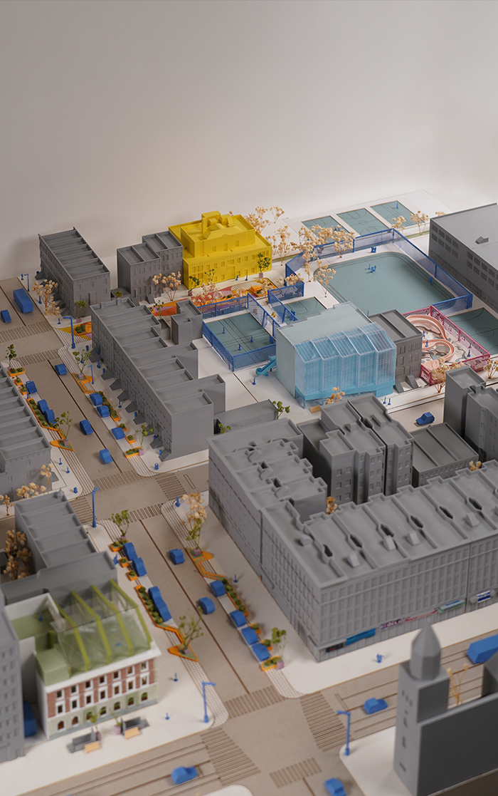
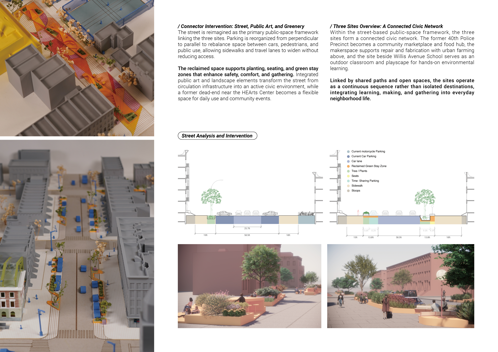
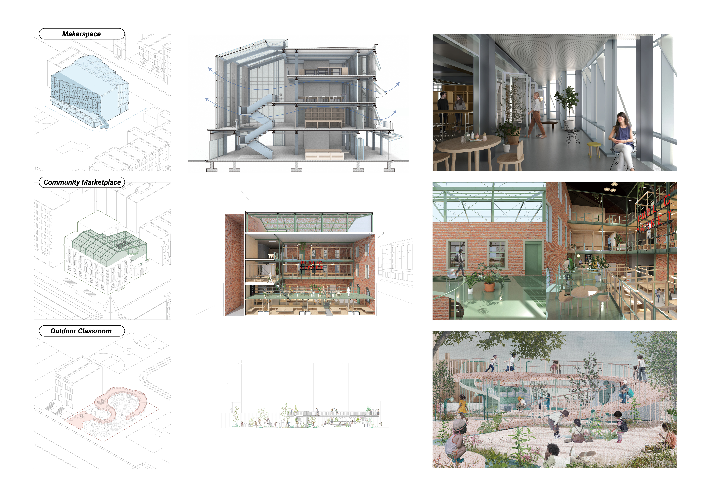
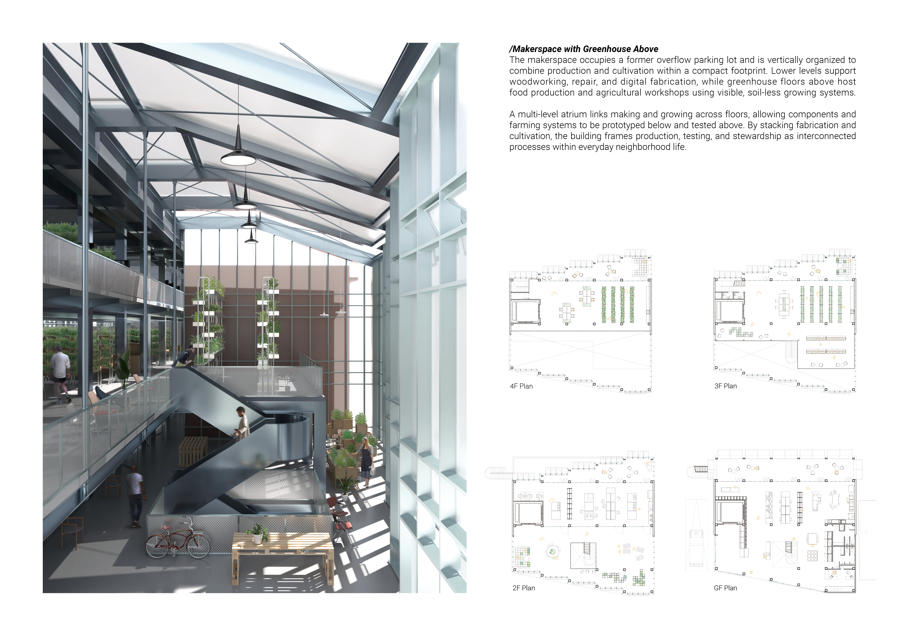
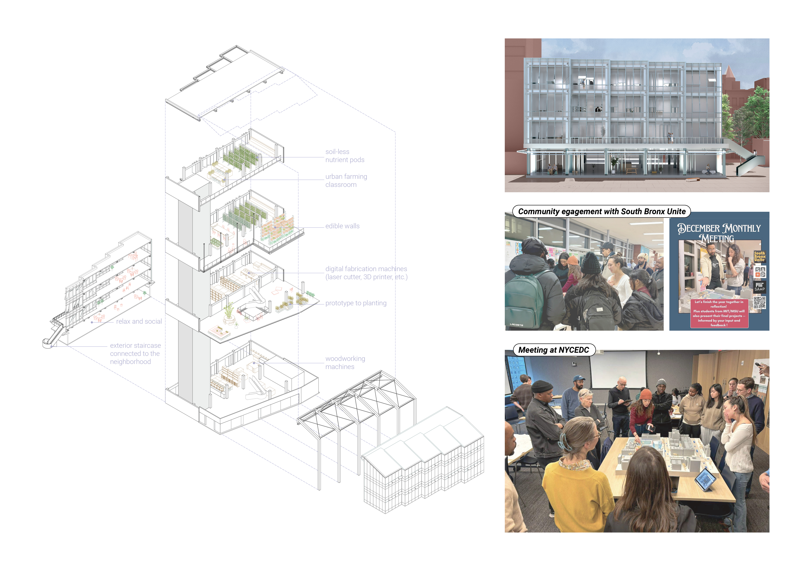

Growing The South Bronx
Community-Driven Urban Regeneration
Growing the South Bronx is a community-driven urban design project developed in collaboration with South Bronx Unite, Community Land Stewards and NYCEDC contributing to a feasibility study that explores sites with the potential to expand the local community land trust through services and infrastructure supporting environmental and economic justice. Located in Mott Haven, the project links three adjacent sites within the existing urban fabric, including the 40th Precinct Police building on Alexander Avenue, an underutilized parking lot on East 139th Street, and a vacant lot next to Willis Playground and a nearby elementary school. Community engagement meetings identified key needs such as accessible green space, gathering areas, and access to fresh food, which informed proposed programs including a community market, makerspace, and interactive playscape.
Date: (MIT SMArchS Fall 2025)
Location: The South Bronx, New York City, USA
Design Team: YaJu Lee, Trang Nguyen, Juliet Chui (3)
Instructor: Miho Mazereeuw, Justin Brazier, Lisbeth Shepherd
Role: As a three-person design team member, I mainly focused on Master Planning, Street Analysis and Design, Overflow Parking Site's Design-Makerspace, Physical Model Making



